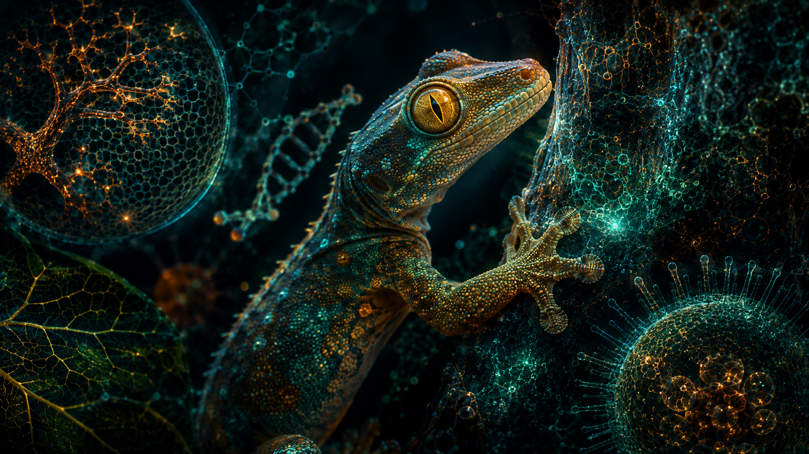

The natural world operates under rules that frequently sound like pure fiction. Evolution has shaped creatures in astonishing ways to help them conquer extreme environments, evade predators, and hunt. Here are ten shocking animal facts fully backed by biological research.
1. Wood Frogs Turn Into Living Ice Cubes
The North American wood frog can survive having up to 65% of its body water completely frozen solid during winter. Its heart stops beating, its brain stops functioning, and it stops breathing. It protects its cells by flooding its bloodstream with natural glucose antifreeze.
2. Wombats Produce Cube-Shaped Poop
Wombats are the only known animals on Earth that create cubic feces. Scientists discovered that the wombat’s intestinal walls have varying degrees of elasticity, contracting with different rhythms to shape the waste into blocks so it won't roll away when used to mark territory.
3. Cows Have Best Friends and Get Stressed
Extensive studies in animal behavior show that cows form deep, lifelong social bonds. When they are separated from their preferred companion, they exhibit measurable physiological signs of severe psychological stress and anxiety.
4. Octopuses Possess Three Hearts and Blue Blood
An octopus has a decentralized nervous system, but its circulatory system is equally wild. Two hearts pump blood through the gills, while a third pumps it to the rest of the body. Because their blood relies on copper-rich hemocyanin rather than iron to transport oxygen, it appears bright blue.

5. Sloths Can Hold Their Breath Longer Than Dolphins
While dolphins need to surface regularly for air, three-toed sloths can slow their metabolic rate down drastically. By shutting down non-essential organ activity, a sloth can hold its breath underwater for up to 40 minutes without drowning.
6. Pistol Shrimps Generate Sonic Booms Hotter Than the Sun
The snapping shrimp uses a specialized claw to shut its pincer so fast that it creates a cavitation bubble. When the bubble collapses, it generates temperatures reaching 4,700°C (nearly as hot as the sun's surface) and emits a brief flash of light called sonoluminescence.
7. Crows Recognize Human Faces and Hold Grudges
Ornithological studies prove that crows possess advanced facial recognition. If a human threatens a crow, the bird will remember that face for years, scold the person whenever spotted, and teach other crows in the flock to target that individual.
8. Sea Otters Hold Hands While Sleeping
To prevent themselves from drifting apart or away from safe feeding grounds while sleeping in choppy ocean waters, sea otters naturally form floating groups called rafts and hold hands throughout the night.
9. Jellyfish Operate Entirely Without a Brain
Despite having no brain, heart, bones, or central nervous system, jellyfish have thrived in the oceans for over 500 million years, relying on a basic nerve net to sense stimuli and catch prey.
10. Flamingos Are Born Completely Gray
Baby flamingos hatch with white or gray down feathers and straight bills. They only acquire their iconic pink and orange coloration later in life through their diet, which is rich in carotenoid pigments found in algae and brine shrimp.
Scientific References & Sources
- National Geographic: Animal Behavior and Biological Adaptation Studies.
- Proceedings of the National Academy of Sciences (PNAS): Biomechanical and Physiological Research on Wildlife.
- Smithsonian Magazine: Wombat Intestinal Mechanics and Wildlife Science.